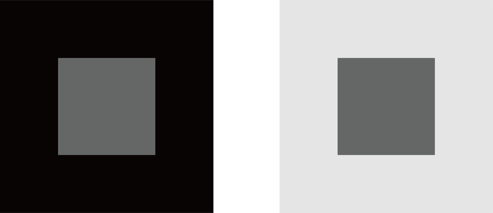

동시 대비(Simultaneous Contrast)는 같은 색이 주변 색에 따라 전혀 다르게 보이는 현상이다. 밝은 배경 위의 회색은 어둡게, 어두운 배경 위의 같은 회색은 밝게 보인다. 눈은 색을 절대적인 값으로 읽지 않고, 항상 주변과의 관계 속에서 상대적으로 판단한다.
이 현상을 처음 체계적으로 연구한 것은 19세기 프랑스 화학자 미셸 외젠 슈브뢸(Michel Eugène Chevreul)이다. 그는 직물 염색 공장에서 일하며 같은 색실이 주변 색에 따라 다르게 보인다는 사실을 발견했고, 이를 과학적으로 기록했다. 이후 인상주의 화가들이 이 원리를 회화에 적극적으로 활용했다.
동시 대비는 명도뿐 아니라 색상(hue)에도 작용한다. 회색을 빨간 배경 위에 놓으면 약간 초록빛으로, 파란 배경 위에 놓으면 약간 주황빛으로 보인다. 뇌가 주변 색의 보색 방향으로 인식을 보정하기 때문이다.
이 착시는 일상에서 끊임없이 작동한다. 같은 옷이 어떤 조합으로 입느냐에 따라 달라 보이고, 같은 벽 색이 주변 가구에 따라 달라 보이는 것 모두 동시 대비의 결과다. 우리가 보는 색은 물체에 있는 것이 아니라, 뇌가 맥락 속에서 만들어내는 것이다.